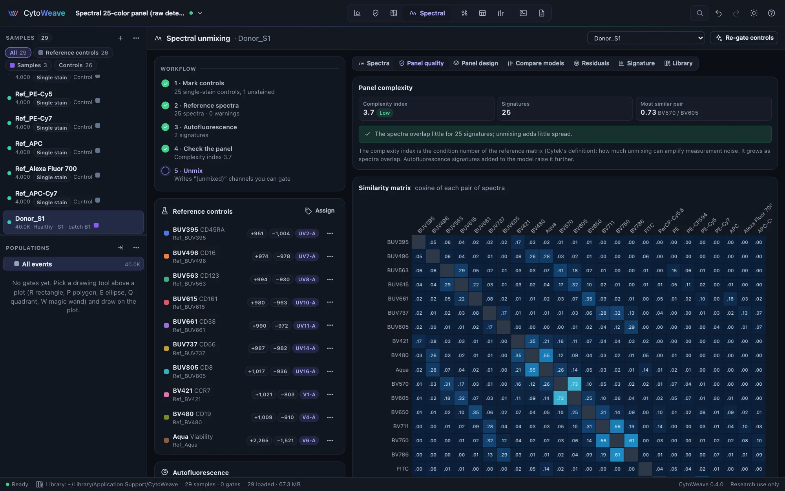
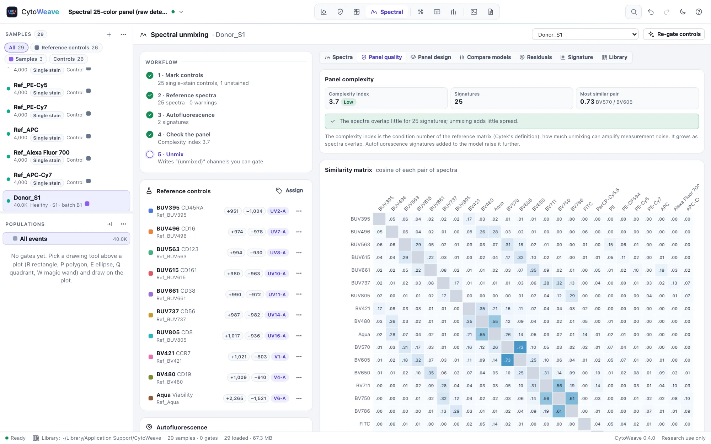
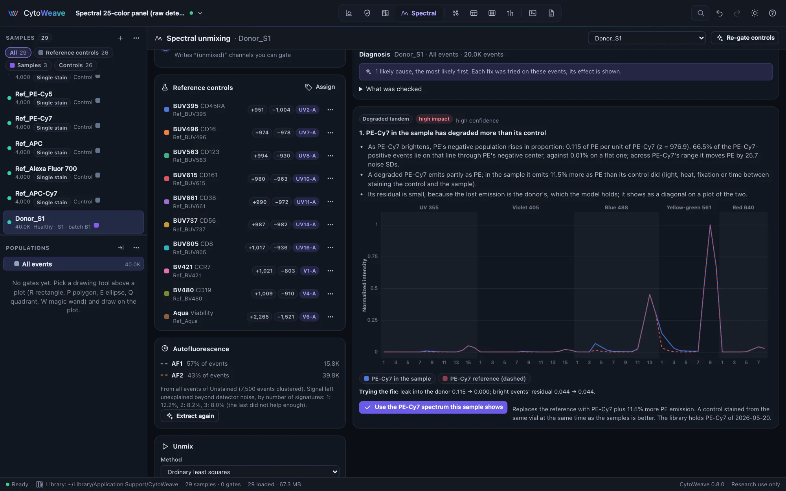
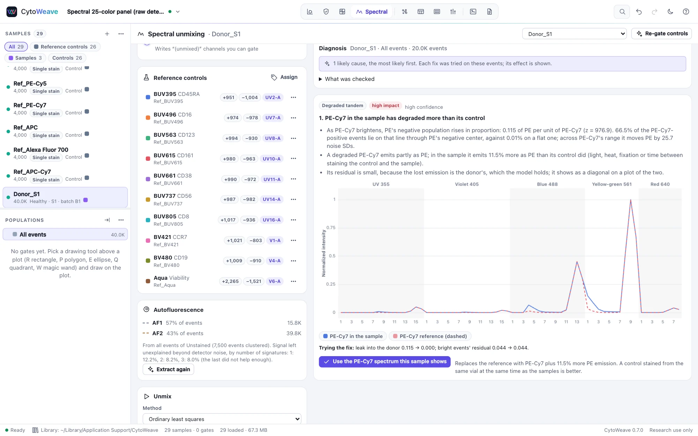
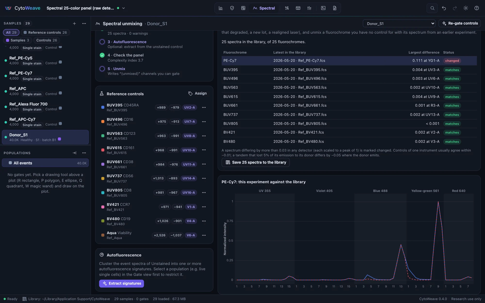
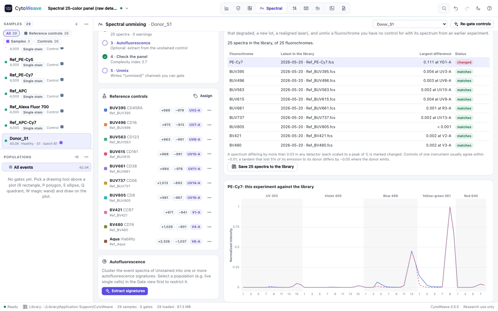
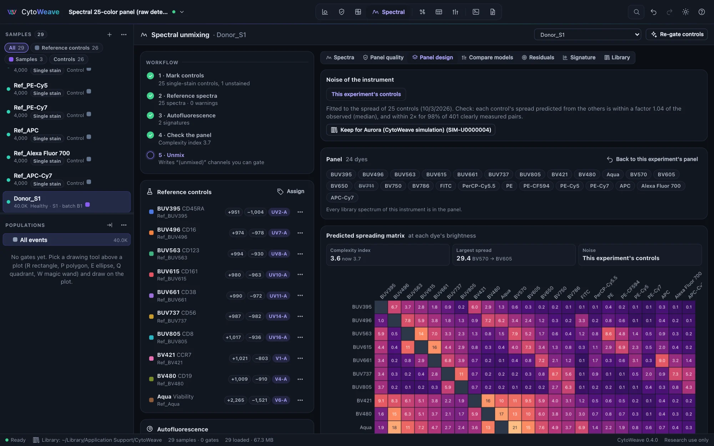
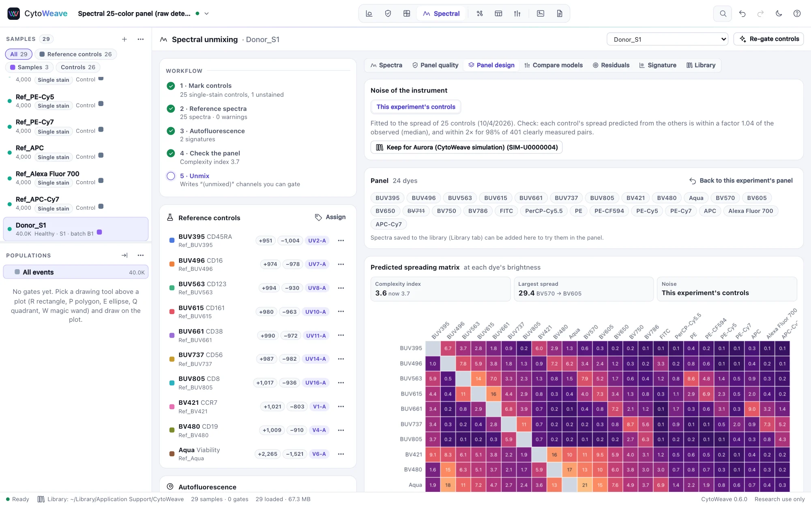
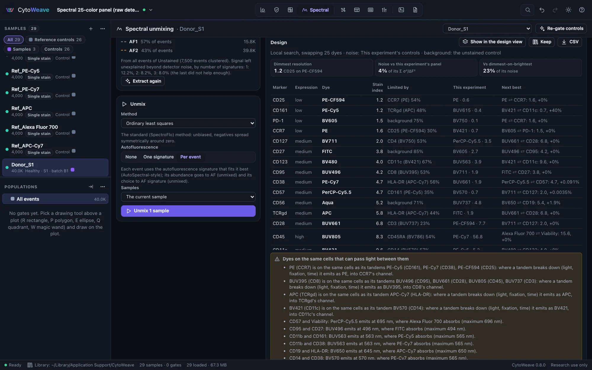
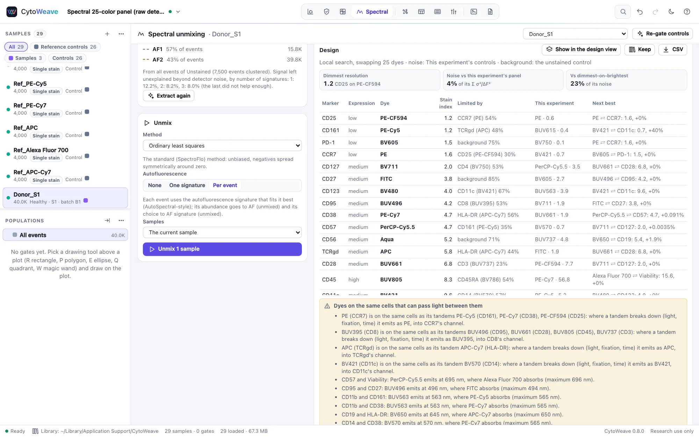

Spectral unmixing
Turn raw detector data from a spectral cytometer into one channel per dye, and see which unmixing model resolves your dim populations best.
The Spectral view works on raw data from spectral cytometers (Cytek Aurora and Northern Lights, Sony ID7000, BD FACSDiscover and others) with the detector channels intact. Files that hold only unmixed channels can be gated, but not unmixed again. The Spectral 25-color panel example has 64 detectors, 25 single-stain references, an unstained control and three stained samples, with the true abundances of every dye kept for every event.
The workflow


The Workflow list on the left tracks five steps and shows what each one found.
- Mark controls. Click Assign under Reference controls to choose which files are single-stain references and the unstained control, and name each reference's fluorochrome and marker. The fluorochrome names the unmixed channel; the marker labels it.
- Reference spectra. Click Gate all controls. Each control's positive events (the brightest above the negative on its peak detector, leaving out any event off scale in any detector, whose spectrum is clipped) and negative events are found without scatter gates, and its spectrum is the difference of their medians, normalized to a peak of 1. The negative is internal (unstained events in the same tube) or the unstained control. Each control's ⋯ menu sets its peak detector, gates it again or excludes it from the panel.
- Autofluorescence. Click Extract signatures to find one or more autofluorescence signatures in the unstained control, for example dim lymphoid and bright myeloid autofluorescence.
- Check the panel in the Panel quality tab (below).
- Unmix. Choose the samples, the method and how to treat autofluorescence, then click Unmix. Each dye becomes a "(unmixed)" channel you can gate like any other, and the residual of every event becomes a channel too.
From SpectroFlo. Open a SpectroFlo experiment (.Expt) with its raw control files (SpectroFlo's Raw folder, including the unstained control) and CytoWeave lists the experiment's reference controls: fluorochrome, marker, beads or cells, the detector SpectroFlo gated each one on, and the matching file. Mark controls sets them up as in step 1. CytoWeave then computes each spectrum from its file; it does not use the spectra stored in the experiment, which on public data do not match the controls' own events (the validation suite checks both on the AutoSpectral example: CytoWeave's spectra peak in the detectors SpectroFlo gated on).
The Control quality table checks each reference: its peak detector, positive and negative signal, separation, and the similarity of the dimmest and brightest thirds of its positives. Below 0.98 suggests the control is a mixture, such as a degraded tandem.
Panel quality


- Complexity index: the condition number of the reference matrix (Cytek's definition), how much unmixing can amplify measurement noise. It grows as spectra overlap, and autofluorescence signatures added to the model raise it further.
- Similarity matrix: the cosine similarity of every pair of spectra. Pairs at 0.90 or above are hard to separate; avoid putting co-expressed markers on them.
- Spectral spreading matrix: computed by unmixing the controls; how much each dye widens the negatives of every other. The noise fitted to it is kept, with the spectra, for virtual FMO controls of the unmixed channels.
Unmixing methods
| Method | What it does |
|---|---|
| OLS | Ordinary least squares, the standard for spectral cytometry |
| WLS (fixed) | Weighted least squares with one weight per detector, from its background noise: noisy detectors count less. As fast as OLS. |
| WLS (per event) | Each event reweighted by its own fitted signal, so bright events rely less on the detectors where their photon noise is largest. This narrows the spread on co-expressed dim channels. |
| NNLS | Non-negative least squares: no dye below zero |
Autofluorescence can be left out, treated as one more signature (+ 1 AF), or assigned per event, where each event gets whichever of several autofluorescence signatures fits it best (per-event AF). Per-event autofluorescence needs two or more signatures.
Comparing models on your sample
Which model is best depends on your panel and your cells, so measure it. Select a population (dim populations are the ones that suffer), open Compare models, and run it. CytoWeave unmixes the population with up to seven combinations of method and autofluorescence model: OLS, WLS (fixed), WLS (per event), NNLS, OLS + 1 AF, OLS + per-event AF and NNLS + per-event AF. For every dye it shows:
- Spread: the robust SD of the dye's negative population, the dimmest half of the population at that dye. Smaller is better: dim positives separate from a tighter negative.
- Residual: the signal the model leaves unexplained, overall and for the brighter half of events, where misfit dominates noise.
Pick the model with the tightest negatives and the smallest residual, then unmix with it.
Residuals and signatures
Residuals shows where the reference set fails to explain the data: the median residual per detector and a heat strip of events binned from dim to bright. A missing dye, a degraded tandem or an unexpected autofluorescence shows as a systematic misfit in the detectors where it emits. When the residuals scatter around zero in every detector, the references explain the population well. Signature draws the raw spectral signature of the selected population: the density of its events' signal in every detector.
Against the true abundances of the 25-color example, unmixed values correlate with a median r of 0.988, within 0.001 of unmixing with the true spectra.
Diagnosing a poor unmixing


The Diagnose tab goes further than the residuals: it names the likely causes of a poor unmixing of the selected sample, most likely first. Select a stained sample (ideally its live single cells in the Gate view) and click Diagnose. Each cause comes with its evidence, a chart of the spectrum at fault against the reference or library spectrum it is compared with, and a fix that was tried on the same events, with its effect (how many events were left unexplained, how far the reference departed from the sample, how much a tandem leaked into its donor). It looks for:
- A dye without a reference. Light that no signature explains, on far more events above the noise than below it (noise is symmetric; missing light is not). Its spectrum is estimated from the events that carry it, and named when the spectral library holds a matching dye; the fix adds the library spectrum, or the estimate.
- A reference that does not match the dye in the sample. Where a dye is bright, the light per unit of the dye that its reference misses. When the library's spectrum of the dye fits the sample, this experiment's control is the odd one (another dye or conjugate in the tube, another lot); when the control is on capture beads and every bead spectrum misfits (or a cell spectrum fits), the dye emits differently on beads than on cells.
- A degraded tandem. A tandem that lost emission to its donor in the samples (light, heat, fixation, time) leaves almost no residual, because the donor is in the panel: instead the donor's negative population rises in proportion to the tandem. The doctor finds the line that most of the tandem's positive events follow through the donor's negative center; co-expression of the two markers does not line up that way. A tandem more degraded in its control than in the samples shows as the opposite slope.
- A cell control carrying autofluorescence. When a marker is on autofluorescent cells (CD11b on myeloid cells, Siglec F on eosinophils, F4/80 on macrophages), the control's positives carry autofluorescence its negatives do not, and the reference holds part of it. The dimmer positives then depart from the brighter ones in the shape of the unstained control's autofluorescence. A bead control, or negatives gated on the same cells, avoids it.
- Autofluorescence the unstained control does not describe. The sample's autofluorescent cells fitted worse than the unstained control's own (fixation changes autofluorescence), light that grows with each event's autofluorescence, or cells of the sample's scatter that the unstained control lacks (an unstained control of lymphocytes for samples with monocytes). The fix adds signatures extracted from the sample's own autofluorescence-dominated cells; an unstained control prepared as the samples were is better.
To see it at work, open the Spectral panel, day 2 example: the 25-color panel acquired again with two faulty reference controls, which the doctor names on each donor.
A fix changes the reference library in one undoable step: a library spectrum or the spectrum the sample shows joins the panel (with the control set aside), or autofluorescence signatures are added, each event choosing its own. Diagnose again to check it, then unmix the samples again. The doctor fits ordinary least squares whatever unmixing method you chose, since the faults it looks for are the references'. What was checked lists every check and its numbers, including the dyes too dim in this sample to compare with their references.
In the validation, six faults planted by the simulator are each named first on two simulated experiments, clean samples show nothing, and each fix brings the unmixed values closer to the truth (beside a PE-Cy7 degraded in its control, PE's correlation with the truth rises from 0.04 to 0.84). On the AutoSpectral example's real controls, the cell controls of CD11b, Siglec F and F4/80 are named as carrying autofluorescence, and none of the lymphoid-marker or bead controls; its spleen fixed in PFA is named as autofluorescence the fresh unstained control does not describe, and the same spleen unfixed is not.
The spectral library


Reference spectra are worth keeping: a tandem dye degrades in the vial, a new lot differs, a laser is realigned. The Library tab keeps spectra across experiments, per instrument (by cytometer and serial number):
- Save to the library stores the spectra of this experiment's controls, with their file, date and quality.
- Each control is compared with the library's latest spectrum of its fluorochrome, detector by detector with both scaled to a peak of 1. A difference above 0.03 anywhere marks it changed, in the table and in the list of controls; click it to overlay the two spectra. Independent controls of one instrument usually agree within about 0.01; a PE-Cy7 that has lost 5% of its emission to PE differs by 0.05 at the yellow-green laser's first detector. Unmixing such a dye with its old spectrum moves its PE emission into PE: in the validation, PE's correlation with the truth falls from 0.68 to 0.48.
- Add to the panel brings in the library spectrum of a fluorochrome you have no control for. It is unmixed like any other reference (in the validation, as accurately as with its own control) but has no control events, so it is left out of the spreading matrix. The methods paragraph says which spectra came from the library.
To try it, open the 25-color spectral example, save its references to the library, then open Spectral panel, day 2: the same cytometer's new controls, two of which the library marks changed.
A library spectrum is only valid for the same instrument, detectors and settings: CytoWeave matches entries by detector names and keeps one library per instrument.
Panel design: predicted spread


The Panel design tab predicts the spreading matrix of a panel from its spectra and the instrument's noise, so you can try a change before running it. Spread has two sources:
- Photon noise. Every detector a dye reaches counts photoelectrons, and its noise grows with the signal (1/Q, as in instrument characterization). Unmixing carries that noise into the other channels.
- Laser fluctuations. Each laser's intensity varies a little from cell to cell, independently of the other lasers. A dye excited by two lasers (BV421 also by the UV laser, PerCP-Cy5.5 also by the violet) then spreads in proportion to its brightness, not its square root. On real controls this is what made the difference for the largest spreads.
The noise comes from one of three places:
- This experiment's controls. Compute in Panel quality also fits the noise to the controls' spread and checks the fit by predicting each control from all the others. The tab shows how well that worked.
- Kept for the instrument. Keep for stores the fitted noise in the library, beside the instrument's spectra.
- Bead runs. Photon noise comes from the instrument's multi-level bead runs; laser fluctuations come from controls when there are any. Q depends on detector gains, so use runs at the same settings.
Click a dye to leave it out, or add a library spectrum, and the matrix, the complexity index and the table below follow. Spread received by each channel sums what every other dye adds to a channel's negative population when all are on the same cell: the channels at the top suit dim or critical markers. With no files open, Design a panel from the spectral library on the Spectral page does the same from an instrument's library alone, before any control is run.
What it does not predict: spread from a heterogeneous dye (a degraded tandem) or from autofluorescence that differs between positive and negative cells (dead cells in a viability control). Gate bead controls on singlets first, as for compensation.
How well it works:
- Real controls. On the 15 bead controls of a BD LSRFortessa, each control's spread predicted from the other 14 was within 2× of the observed value for 79% of the pairs measured to 4 standard errors. With photon noise alone, 67%.
- Simulated controls. On the simulated 25-color panel, 98% were within 2×. A 15-dye panel predicted with the noise of the 25-dye controls matched its own unmixed controls within 2× for every pair.
- A real spectral instrument. On the 25 bead reference controls of a public 25-color panel run on a 5-laser Cytek Aurora, a 12-dye panel's spread predicted with noise fitted to the other 12 dyes' controls was within 2× for 65% and 73% of the pairs (each half predicted from the other; correlation 0.76 and 0.80). Predictions run low by a median factor of about 1.6. One control, a PE-Cy7 whose dim and bright positives have different spectra, is left out: its spread is a degraded tandem's, not noise.
Optimizing the assignment


Optimize the assignment, a view of the Panel design tab, chooses the dye for each marker of a panel:
- List the markers. This experiment's markers fills the list from the controls. Give each one its expression: high (about 10⁵ molecules per cell, such as CD3, CD4, CD8 or CD45), medium (10⁴) or low (10³, such as CD25 on conventional T cells, PD-1 or CCR7), or a number.
- In each group, tick the markers found on the same cells: T cells, NK cells, B cells, myeloid cells. Spread matters only between markers on the same cells. With a single group of every marker, everything counts as co-expressed, the most cautious assumption.
- Optionally fix a marker's dye (a viability dye, a reagent sold in one color only). Under Dyes, leave dyes out or set their brightness.
- Click Optimize.
For every marker, the optimizer predicts its stain index on the cells of each of its groups. The signal is the marker's expression times its dye's relative brightness, as vendors' brightness charts rank dyes. The noise is the unstained control's background in the dye's channel, carried through the unmixing, plus the spread every other marker of the group adds at its own brightness: photon noise and laser fluctuations, as above. It minimizes the sum over markers of noise squared over signal squared, so dim markers co-expressed with bright ones count most. A dim marker wants a bright dye in a channel little else spreads into. A bright marker is better on a dye that spreads little into its neighbors' channels.
Which dyes are in the panel changes the unmixing, so each set of dyes tried is unmixed afresh. Similar spectra amplify noise, so a set with two similar dyes costs more. Up to 50,000 assignments, every one is tried. Beyond that, a seeded local search swaps two markers' dyes or gives a marker an unused dye, from several starts.
The design lists each marker's dye and predicted stain index, what limits it (the background, or the co-expressed marker that spreads most into it), and the next best dye: its stain index for that marker, and how much the panel's noise would grow. With an experiment open, the design is compared with the dyes the experiment used. Candidate dyes are this experiment's controls and the instrument's library spectra, which must come from the same instrument and settings.
Two kinds of dye pairs on the same cells are flagged. A tandem and the dye it is built on (PE-Cy7 and PE, BV605 and BV421): a tandem that breaks down with light, fixation or time emits as its donor, into the donor's channel. A donor whose emission falls where another dye absorbs (FITC and PE): on the same molecule or complex, within about 10 nm, the acceptor can take the donor's energy.
Show in the design view opens the design's dyes in the predicted spreading matrix. Keep stores the design in the instrument's spectral library. Once the panel has been run and its spreading matrix computed, Kept designs checks the spread each design predicted against the run's controls. CSV downloads the design. Without files open, Design a panel from the spectral library offers the same view on an instrument's library spectra, with the noise and unstained background kept for it. Keep for stores both.
For a conventional panel, Optimize the panel… in the Compensate view's diagnostics does the same with the dyes of a compensation computed from single-stain controls, each read in its own detector.
The design is only as good as its inputs. Brightness values are approximate, since they depend on the antibody's degree of labeling and on the lot, and expression levels are yours. It does not predict degraded tandems, a wrong control, steric hindrance between antibodies on the same molecule, or expression that differs from the levels given.
How well it works: in simulated panels, each assignment was stained, unmixed or compensated, and every marker's resolution was measured on cells carrying its co-expressed markers. For an 8-marker T-cell panel on 10 dyes, the predicted cost matched the measured one with correlation 0.996 (spectral) and 0.999 (conventional) across 26 assignments. The optimum measured best of them, 4× and 29× less noisy than putting the dimmest markers on the brightest dyes. Local search found the exhaustive optimum of every small panel tried. A 25-color design takes about 8 seconds and two seeds land on the same optimum as a search four times longer.